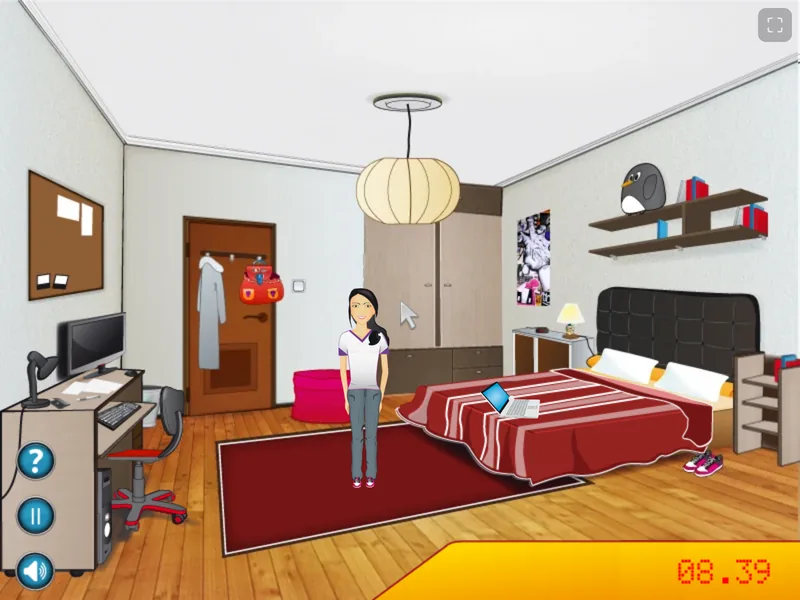
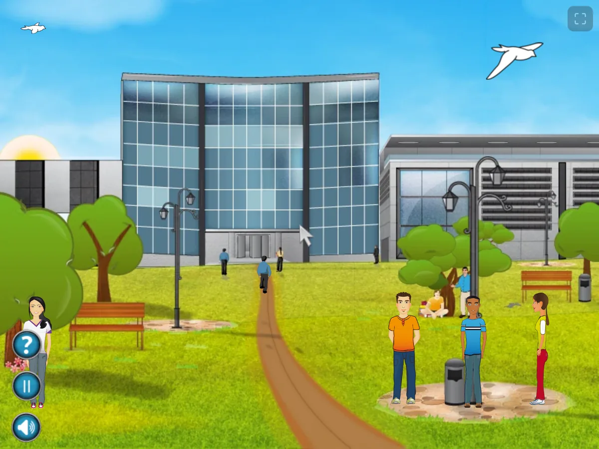
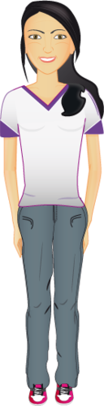
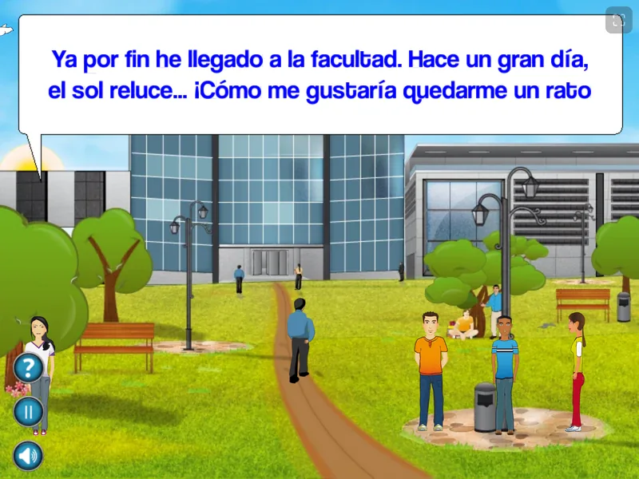
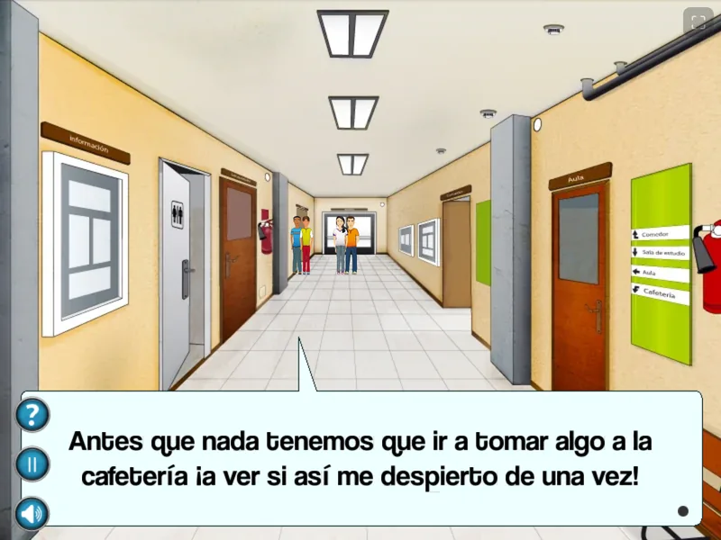
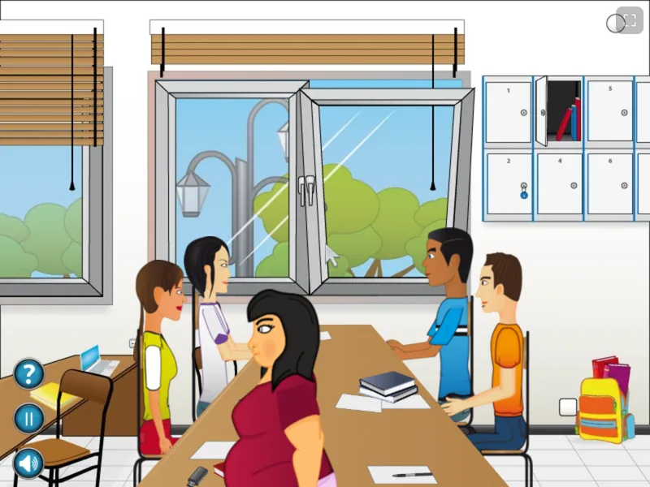
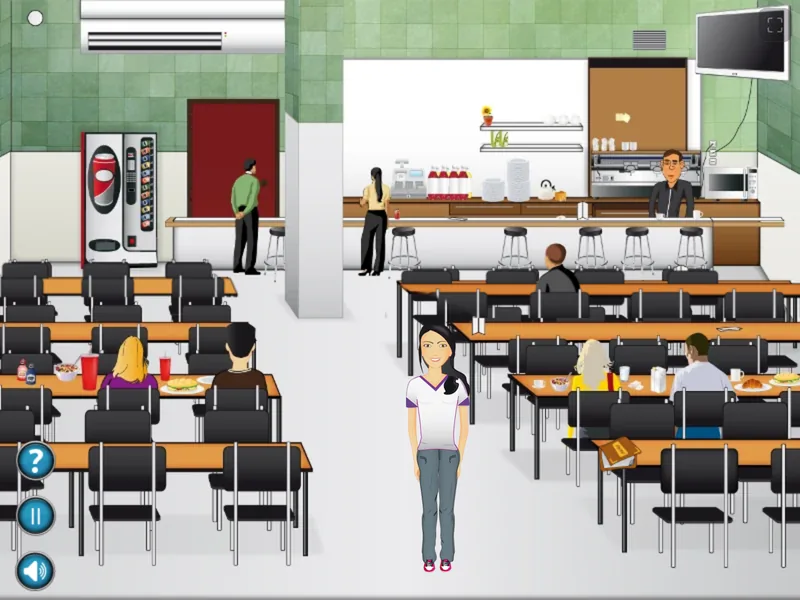
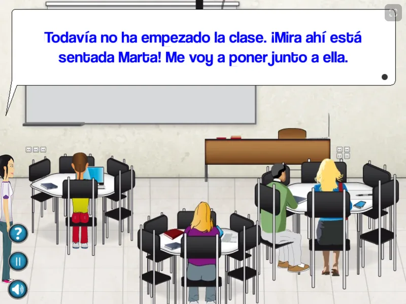

1
La habitación de Eva
Desayunar, preparar lo necesario y elegir cómo ir a la universidad: a pie, en bicicleta, en tren, en autobús o en coche.
Un juego educativo de tipo point and click sobre la evaluación en la vida cotidiana. Acompaña a Eva, estudiante universitaria, durante un día de su vida y decide en cada escena con criterio.


Un día con Eva es un juego educativo desarrollado en el marco del proyecto Alfa DevalSimWeb, financiado por la Unión Europea. La persona que juega vive con Eva un día en el que tiene que establecer criterios, comparar, valorar y tomar decisiones. Al final, un informe resume cómo lo ha hecho.
Sirve en contextos formales y no formales, para jugar de forma individual o para comentarlo después en grupo: el informe final da pie a hablar de los criterios que ha usado cada persona.
Eva ha tomado muchas decisiones a lo largo de su vida. El juego se sitúa en un día cualquiera y lo recorre en seis escenarios.

Desayunar, preparar lo necesario y elegir cómo ir a la universidad: a pie, en bicicleta, en tren, en autobús o en coche.

Eva se encuentra con gente de su clase y decide si hace un trabajo en solitario o en grupo.

El cruce de caminos hacia el resto de escenarios, con conversaciones y opciones que solo aparecen aquí.

Eva evalúa con una rúbrica los trabajos de otras personas de su clase, sola o en grupo según lo que decidió antes.

A mediodía toca reponer energías y elegir un menú de acuerdo con sus preferencias.

Antes de clase, Eva habla con su amiga y decide si salir esa noche o quedarse estudiando.
Los vídeos están en el canal de YouTube del Grupo de Investigación EVALfor y solo se cargan desde YouTube si pulsas en ellos.
Sin instalar nada, en el ordenador, la tableta o el móvil.
La versión de 2014, tal como se publicó, se conserva en Zenodo.
undiaconeva.jar con doble clic.Juego realizado en el marco del Proyecto DevalSimWeb, ALFA III (2011)-10, con la financiación de la Unión Europea.
Juego realizado en el marco del Proyecto DevalS, EDU2012-31804, con la financiación del Ministerio de Economía y Competitividad.
Reconocimientos. Música: «High Speed Chase», de DJ Reset, y «Love», de The Flame (jamendo.com). Desarrollado con eAdventure (e-UCM, Universidad Complutense de Madrid).
El juego se distribuye bajo la licencia Creative Commons Reconocimiento-CompartirIgual 3.0 Unported. El código de la versión para navegador, adaptación del motor eAdventure, se distribuye bajo GNU LGPL 3.0.
La versión original y la versión para navegador están archivadas en Zenodo, con un DOI permanente.
Gómez Ruiz, M. Á., Ibarra-Sáiz, M. S., Rodríguez-Gómez, G., Serrano Laguna, Á. y Nieto Rojas, D. (2014). Un día con Eva [Juego educativo]. Zenodo. https://doi.org/10.5281/zenodo.24529835
In English. A Day with Eva is an educational point-and-click game, in Spanish, about assessment in everyday life. Play it for free in your browser.